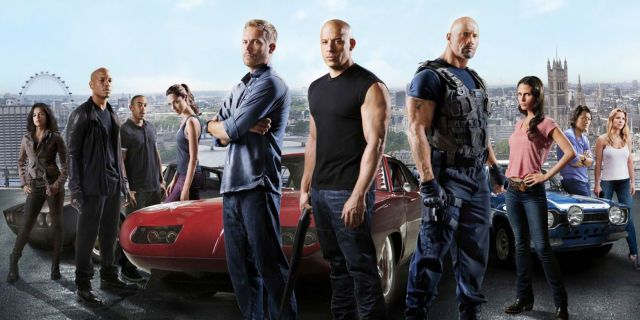
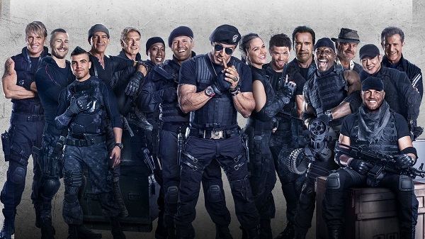
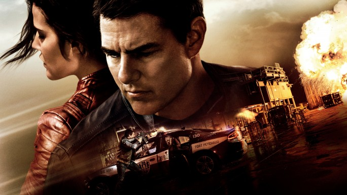
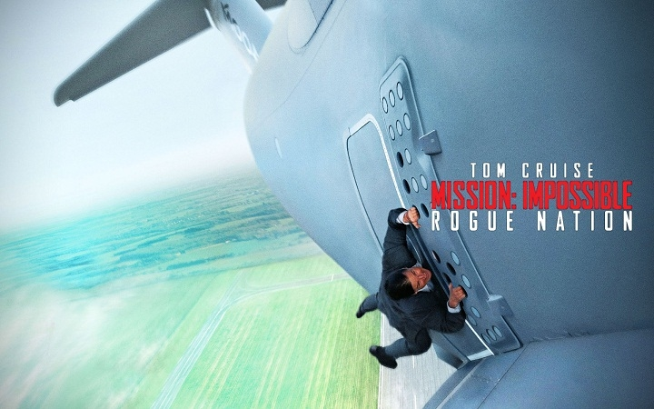

Любимые фильмы

Форсаж 1-8
Главный герой — полицейский под прикрытием Брайан О’Коннер (Уокер, Пол). Его цель — быть принятым в автобанду легендарного уличного гонщика Доминика Торетто (Вин Дизель), которого подозревают в налётах на грузовики с бытовой техникой.Фильм собирает вместе главных героев первого фильма: полицейского Брайана (Пол Уокер) и семью Доминика Торетто (Вин Дизель) — сестру Мию (Джордана Брюстер) и его девушку Летти (Мишель Родригес). В этот раз Доминику и Брайану придётся поработать вместе — им предстоит втереться в доверие к известному наркобарону по имени Артуро Брага (Джон Ортис). У каждого из героев свой резон, чтобы наказать злодея.

Неудержимые 1-3
Главные герои фильма — группа элитных наёмников, выполняющих самые разнообразные задания — от спасения заложников, до свержения диктаторов. Некто «Храм» нанимает их для ликвидации генерала Гарзы — правителя небольшого острова Вилена, расположенного между Мексиканским заливом и Южной Америкой.Отряд «Неудержимые», состоящий из его лидера Барни Росса, эксперта по холодному оружию Ли Кристмаса, мастера рукопашного боя Инь Яна, психически неуравновешенного инженера-химика Гуннара Йенсена, специалиста по тяжёлому оружию Хэйла Цезаря, эксперта-подрывника Толла Роуда, а также новичка, снайпера Билли Тиммонса, прибывает в Непал для выполнения очередной спецоперации.

Джек Ричер 2
Джек Ричер решил взять передышку и вернуться в родное 110-е подразделение военной полиции, где он когда-то был начальником. Тем более у него есть дополнительный интерес — действующий командир части, майор Сьюзан Тернер. Именно майор Тернер выручила его, сообщая своим волнующим голосом по телефону ценную информацию, которая помогла Джеку Ричеру выпутаться из серьезных неприятностей. И вот теперь у него есть возможность поблагодарить коллегу лично. Вот только оказавшись в расположении части, Ричер узнает, что буквально на днях Сьюзан арестовали за получение крупной взятки. А его самого обвинили в убийстве шестнадцатилетней давности, о событиях которого он ничего не помнит.

Миссия невыполнима 5
Когда ОМН распускают, и Итан Хант остается не у дел, его команда неожиданно сталкивается с разветвленной международной сетью высокопрофессиональных спецагентов — Синдикатом. Это «племя изгоев» одержимо идеей установления нового мирового порядка и планирует серию разрушительных терактов. Итан и компания объединяются с дискредитированным британским агентом Илсой Фауст и приступают к своей самой невыполнимой миссии, понимая, что каждый из них может оказаться на стороне Синдиката.